던전 게임 요소 사전
게임을 먼저 해 보고 읽으세요. 여기에는 게임에 나오는 것들의 이름, 위치, 하는 일만 적혀 있습니다. 속도, 체력, 확률 같은 숫자와 세부 규칙은 일부러 비워 두었습니다. 점선 상자의 빈칸은 여러분이 직접 정해서 AI에게 줄 지시문에 적으세요.
어떤 게임인가
- 장르: 위에서 내려다보는 픽셀 그림 던전 액션 게임. 한 번 죽으면 처음부터 다시 하는 로그라이크 방식.
- 목표: 층마다 방을 돌며 적을 물리치고 장비를 모아, 마지막 방의 보스를 쓰러뜨린 뒤 계단으로 다음 층에 내려가기.
- 한 층의 흐름: 시작 방 → 전투 방, 보상 방, 상인 방을 탐험 → 다른 방을 모두 거친 뒤 보스 방 → 계단 → 다음 층.
- 층이 내려갈수록 적이 더 세지고, 새로운 종류의 적과 다른 보스가 나온다.
- 층 구조는 매번 무작위로 바뀐다. 같은 판은 두 번 나오지 않는다.
- 게임은 브라우저에서 돌아가는 HTML 파일 하나(+그림 파일들)로 만든다. 마우스는 보관함 정리에만 쓰고, 이동과 공격은 키보드로만 한다.
- 한 층에 방이 몇 개쯤? 방들이 놓이는 격자의 크기는?
- 한 판(1층 시작~보스)이 몇 분쯤 걸리면 좋을까?
화면 구성
화면 전체가 스크롤 없이 한 화면에 들어온다. 위에서 아래로 이렇게 쌓여 있다.
1체력 바⚔ 공격력🪙 금화층 표시
4미니맵🛡
2게임 화면(방)
2게임 화면(방)
12345678905정렬
6조작 도움말
- 1상태 띠(HUD): 맨 위 가로 띠. 왼쪽부터 체력 바(현재/최대 숫자 포함), 공격력, 가진 금화, 지금 몇 층인지.
- 2게임 화면: 방 하나가 통째로 보이는 픽셀 그림 화면. 창 크기에 맞춰 커지거나 작아진다.
- 3보스 체력 바: 보스 방에서만 게임 화면 위쪽에 보스 이름과 함께 나타난다.
- 4미니맵: 게임 화면 오른쪽 위 구석. 가 본 방과 문으로 이어진 옆 방이 보인다. 지금 있는 방은 주황, 상인 방은 노랑, 보상 방은 파랑.
- 5보관함: 게임 화면 아래 한 줄짜리 칸들. 칸마다 왼쪽 위에 번호가 있고, 오른쪽 끝에 정렬 버튼이 있다.
- 6조작 도움말: 맨 아래 작은 글씨로 키 설명.
- 그 밖에 겹쳐 뜨는 것: 아이템에 마우스를 올리면 뜨는 설명 상자, 상인 옆에 서면 화면 위로 뜨는 가게 창, 쓰러지면 뜨는 "다시 시작" 창, 층을 옮길 때 화면이 어두워졌다 밝아지는 효과.
- 게임 화면 안의 글자: 맞힌 피해 숫자, "매복이다!", "미믹이다!", 주운 아이템 이름 같은 짧은 말이 머리 위에 떴다가 사라진다.
조작
- ←↑→↓ 이동. 대각선 이동도 된다. 벽과 장애물은 통과하지 못한다.
- Z 회전 베기. 칼을 몸 둘레로 한 바퀴 휘둘러, 둘레 안의 적을 한꺼번에 때린다. 누르고 있으면 쿨타임마다 계속 휘두른다.
- 1~0 그 번호 칸의 음식 먹기.
- Esc 가게 창 닫기.
- 마우스: 보관함에서 아이템 끌어 옮기기, 밖으로 끌어 버리기, 정렬 버튼, 가게에서 사기·팔기 버튼. 이동이나 공격에는 쓰지 않는다.
- Z를 한 번 휘두르고 다음 휘두르기까지 기다리는 시간(쿨타임)은?
- 회전 베기가 닿는 거리는? (바로 옆 8칸보다 조금 넓게)
주인공

기사knight_m
- 가만히 있을 때와 걸을 때 다른 애니메이션을 쓴다. 왼쪽으로 가면 그림을 좌우로 뒤집는다.
- 손에 지금 가진 가장 좋은 무기 그림을 들고 있다. 베기를 하면 그 무기가 한 바퀴 돌며 빛나는 궤적이 남는다. 바라보는 방향(왼쪽/오른쪽)에 따라 도는 방향만 바뀐다.
- 발밑에 쿨타임 게이지가 있어서 다시 휘두를 수 있을 때까지 차오른다.
- 적에게 맞으면 체력이 줄고, 잠깐 깜빡이며 무적이 된다. 그동안은 또 맞지 않는다.
- 능력치 이름: 체력 / 최대 체력, 공격력, 쿨타임, 치명타 확률, 치명타 배율, 넉백(때린 적을 밀어내는 거리), 베기 범위, 이동 속도, 금화.
- 치명타가 터지면 피해 숫자가 더 크고 다른 색으로 뜬다.
- 처음 체력과 공격력은? 이동 속도는 1초에 몇 칸?
- 맞은 뒤 무적 시간은? 깜빡이는 빠르기는?
던전과 방
층
- 한 층은 바둑판 격자 위에 방 여러 개가 문으로 이어진 구조.
- 방은 처음 들어가는 순간 만들어진다. 그래서 미리 다 만들어 두지 않는다.
- 보스 방은 항상 그 층에서 마지막으로 새로 들어가는 방이다. 다른 방을 다 가 봐야 보스 방 문이 생긴다.
- 한 번 깬 방은 다시 가도 깬 상태 그대로다.
방 한 칸의 생김새
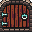
나무 문북쪽 문
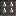
가시동·서·남 문이 잠길 때
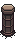
기둥못 지나감
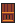
나무 상자못 지나감
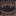
구멍못 지나감
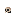
해골장식, 지나감
- 사방이 벽으로 둘러싸인 직사각형 방. 가운데에 걸어 다닐 수 있는 바닥이 있다.
- 문은 북·동·남·서 벽 가운데에 있고 폭이 2칸이다. 그쪽에 옆 방이 있을 때만 문이 뚫린다.
- 북쪽 문은 아치 모양 벽에 달린 나무 문. 열리면 문 너머 바닥이 살짝 보인다.
- 동·서·남 문은 바닥이 뚫린 통로. 방이 잠기면 통로에 가시가 솟아 막는다.
- 문 칸을 밟으면 화면이 넘어가며 옆 방의 반대쪽 문 앞에 선다.
- 벽에는 깃발, 벽 구멍, 끈적이 같은 장식이 붙는다. 방마다 정해진 틀 몇 가지 중 하나를 고르고, 장애물 위치를 조금씩 흔들거나 좌우를 뒤집어 다양하게 만든다.
- 방의 가로·세로 크기는 몇 칸? 바닥은 몇 칸?
- 장애물을 어디에 몇 개 놓을까? 문 앞을 막지 않으려면?
방의 종류
미니맵 색으로 구분한다.
시작 방
- 층마다 처음 서는 방. 적이 없다.
전투 방 — 세 가지 중 하나
보물 상자적을 다 잡으면 열림
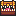
미믹상자인 척하는 적
- 일반 전투: 들어가자마자 적이 있고 문이 잠긴다. 다 잡으면 문이 열리고 상자를 열 수 있다.
- 매복: 처음엔 상자만 있는 빈 방. 상자에 다가가면 "매복이다!" 하며 적이 나타나고 문이 잠긴다.
- 미믹: 처음엔 똑같이 상자만 보인다. 다가가면 상자가 정체를 드러내 덤비고 문이 잠긴다. 미믹 방에는 보상 상자가 없다.
- 적은 문에서 먼 곳에 나타난다. 들어오자마자 맞지 않게.
- 적이 남아 있는데 상자에 가면 "잠겨 있다"고 뜬다.
보상 방
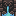
샘물파랑·빨강, 벽에 붙음
- 싸우지 않는 방. 상자 방 또는 샘물 방 중 하나.
- 샘물 옆에 서면 한 번 효과를 받는다: 체력 모두 회복, 최대 체력 증가, 공격력 증가 중 하나. 쓴 샘물은 회색으로 멈춘다.
상인 방
상인난쟁이, 방 가운데쯤
- 층마다 꼭 하나. 상인 앞에 물건이 진열되어 있다.
- 상인 가까이 가면 가게 창이 뜨고, 멀어지면 닫힌다. "사기"와 "팔기" 탭이 있다.
- 상인에게서만 살 수 있는 무기와 방패가 있다.
보스 방
- 아래 "보스" 참고.
- 세 가지 전투 방이 각각 나올 확률은?
- 보상 방은 한 층에 최대 몇 개?
적
- 적은 아무것도 떨어뜨리지 않는다. 보상은 모두 상자에서 나온다.
- 근접형: 기둥과 상자를 돌아서 길을 찾아 주인공에게 다가와 몸으로 부딪친다.
- 원거리형: 일정 거리를 두고 주인공을 향해 탄을 쏜다. 벽이나 장애물에 가려 있으면 쏘지 않는다.
- 맞으면 하얗게 번쩍이고 뒤로 밀려나며, 머리 위에 작은 체력 바가 생긴다.
- 적은 몇 마리씩 무리로 나온다. 층이 깊을수록 다른 무리가 나오고, 같은 적도 체력과 공격력이 올라간다.
1층부터 나오는 적
고블린근접
꼬마 좀비근접
해골 병사근접
작은 민달팽이근접, 느림
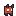
임프원거리
미믹미믹 방 전용
2층부터
오크 전사근접
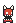
초르트근접, 빠름
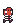
워골근접
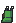
민달팽이근접, 느림
오크 주술사원거리
3층부터
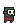
가면 오크근접
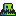
늪 괴물근접, 느림
진흙 괴물근접, 느림
네크로맨서원거리
얼음 좀비원거리
- 적마다 체력, 공격력, 속도는? 원거리 적은 얼마나 자주, 얼마나 빠른 탄을?
- 어떤 적끼리 한 무리로 묶을까? 층이 깊어지면 얼마나 세질까?
보스
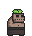
거대 좀비1층
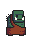
오우거2층
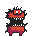
거대 악마3층
서리 거인4층, 푸른 거대 좀비
- 층마다 보스가 다르고, 보스마다 쓰는 공격 패턴 조합이 다르다. 5층부터는 다시 1층 보스부터 돌아오되 더 강하다.
- 보스 방에 들어가면 문이 잠기고, 보스 이름이 화면에 크게 뜬 뒤 싸움이 시작된다.
- 보스는 천천히 걸어 다니다가 패턴 중 하나를 골라 쓴다. 모든 공격은 쏘거나 터지기 전에 먼저 예고 표시가 나와서 보고 피할 수 있다.
- 보스는 잘 밀려나지 않는다. 몸이 커서 조금 떨어져서 베어도 맞는다.
공격 패턴 이름
- 장판: 바닥 여러 곳에 빨간 원이 깔렸다가 잠시 뒤 터진다.
- 돌진: 주인공 쪽으로 빨간 띠가 그어진 뒤 그 길로 빠르게 달려든다. 여러 번 이어질 수 있다.
- 방사탄: 몸 주위가 빛난 뒤 사방으로 탄이 퍼진다.
- 조준 연사(샷건): 주인공 쪽으로 방향선이 보인 뒤 부채꼴로 탄을 몇 번 쏜다.
- 졸개 소환: 바닥에 보라색 마법진이 생기고 거기서 근접 졸개가 나온다. 졸개 수에는 한도가 있다.
- 원거리 졸개 소환: 주황색 마법진에서 탄을 쏘는 졸개가 나온다.
- 체크무늬: 방 바닥 전체가 바둑판처럼 예고된 뒤 한쪽 색 칸만 터진다. 안전한 칸으로 옮겨야 한다.
- 일직선 연사: 방향선이 그어진 뒤 그 줄을 따라 빠른 탄이 줄줄이 날아온다.
- 유도탄: 느린 보라 탄이 주인공을 따라오지만 잘 꺾지 못해서, 크게 돌면 빗나간다.
- 나선탄: 몸에서 여러 갈래로 탄이 빙글빙글 돌며 뿜어져 나온다.
분노 (2페이즈)
- 체력이 절반 아래로 떨어지면 "분노했다!"가 뜨고, 덩치가 커지며 몸이 붉게 깜빡인다.
- 분노하면 패턴 사이 쉬는 시간이 짧아지고 패턴이 더 세진다.
쓰러뜨리면
- 남은 졸개가 사라지고 문이 열린다. 금화를 받는다.
- 전설 등급 아이템이 보스 자리에서 포물선을 그리며 날아가 바닥에 떨어진다. 걸어가서 줍는다.
- 숨어 있던 계단이 나타난다. 밟으면 다음 층.
- 보스 체력과 공격력은? 층마다 얼마나 오를까?
- 각 패턴의 예고 시간, 탄 수, 탄 속도는? 어느 보스가 어떤 패턴을 쓸까?
- 분노했을 때 얼마나 커지고 얼마나 빨라질까?
아이템
- 등급 세 가지: 일반 · 희귀 · 전설. 보관함 칸 테두리 색으로 구분한다.
- 종류 네 가지: 무기, 방어구, 장신구, 음식.
- 무기·방어구·장신구는 보관함에 들고만 있어도 효과가 있다. 따로 장착하는 칸은 없다.
- 여러 개를 들면 효과가 모두 더해진다. 단, 신발은 여러 개 들어도 한 번만 적용된다.
- 아이템에 마우스를 올리면 이름, 등급, 효과가 설명 상자로 뜬다.
- 그림 파일이 없는 아이템(장갑, 신발, 부적, 사과, 치즈)은 이모지로 그린다.
무기 — 공격력, 쿨타임 단축, 치명타 (일부는 넉백이나 범위)
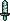
녹슨 검
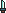
단검치명타 위주
식칼
망치넉백
도끼
강철 검
철퇴넉백
창베기 범위
전투 도끼
루비 검
황금 검
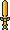
화려한 검
거대 망치큰 넉백

기사의 검상인 전용
결투용 검상인 전용
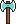
쌍날 도끼상인 전용, 넉백
톱날 검상인 전용
방어구 — 최대 체력 증가

나무 방패

강철 방패
황금 방패
기사 방패상인 전용
떡갈나무 방패상인 전용
장신구 — 특수 효과
🧤
낡은 장갑넉백
🥊
힘의 장갑큰 넉백
👢
가죽 장화이동 속도 (겹치지 않음)
🌀
회오리 부적베기 범위 (원이 커짐)
음식 — 체력 회복
🍎
사과
🧀
치즈
체력 물약
- 음식은 한 칸에 여러 개 쌓이고, 칸에 개수가 표시된다.
- 음식을 먹으면 잠깐 동안 다른 음식을 못 먹는다. 그동안 보관함의 음식 칸마다 게이지가 차오른다.
- 아이템마다 효과 수치와 가격은?
- 무기를 하나 더 들 때마다 쿨타임이 얼마나 줄까?
- 음식을 먹은 뒤 다시 먹을 수 있을 때까지의 시간은? 한 칸에 몇 개까지 쌓일까?
보관함
- 게임 화면 바로 아래 가로 한 줄, 칸 10개.
- 칸마다 왼쪽 위에 번호(1~9, 마지막 칸은 0). 숫자 키로 그 칸의 음식을 먹는다.
- 오른쪽 끝에 정렬 버튼: 무기 → 방어구 → 장신구 → 음식 순, 같은 종류는 등급 높은 것부터.
- 아이템은 줍는 대로 왼쪽 빈칸부터 채워진다.
- 마우스로 끌어서 다른 칸에 놓으면 자리가 바뀐다.
- 보관함 밖으로 끌어내면 버리기: 주인공 발밑 근처 바닥에 떨어진다. 다시 밟으면 주울 수 있다.
- 바닥에 떨어진 아이템은 방을 나가면 사라진다.
- 보관함이 가득 차면 "보관함이 가득 찼다"고 뜨고 줍지 못한다.
상자·금화·상인·샘물
- 상자: 열면 금화가 나오고, 확률에 따라 아이템도 바닥에 튀어나온다. 등급과 종류는 무작위. 상인 전용 아이템은 상자에서 나오지 않는다.
- 층이 깊을수록 상자의 금화가 많아진다.
- 상인: "사기" 탭에서 금화로 진열품을 산다. 산 물건은 진열대에서 빠진다. "팔기" 탭에서 내 아이템을 원래 값의 절반에 판다.
- 진열품은 상인 전용 무기 둘, 상인 전용 방패 둘(층마다 무작위), 그리고 음식.
- 샘물: 보상 방 벽에 붙어 있다. 옆에 서면 한 번만 효과를 받는다.
- 상자에서 아이템이 나올 확률은? 등급별 확률은?
- 상자 하나에서 금화는 얼마나?
죽음과 다음 층
- 체력이 0이 되면 "쓰러졌다…" 창이 뜬다. 다시 시작을 누르면 1층부터, 맨손·빈 보관함·금화 0으로 돌아간다.
- 보스를 잡고 계단을 밟으면 화면이 어두워졌다가 다음 층 시작 방에서 다시 밝아진다. 보관함, 금화, 체력은 그대로 가져간다.
- 층 수에 끝이 없다. 갈 수 있는 데까지 내려가는 게임.
참고: 이 게임은 이런 순서로 만들었다
- 1단계 방과 이동: 방 그리기, 방향키 이동, 문으로 방 넘어가기, 층 만들기, 미니맵.
- 2단계 전투: 적, 회전 베기, 맞기와 무적, 문 잠김, 일반·매복·미믹 전투, 쓰러짐과 다시 시작.
- 3단계 보관함과 아이템: 보관함, 아이템 효과, 상자 보상, 음식, 버리기와 줍기.
- 4단계 방 종류: 보상 방(상자·샘물), 상인 방과 가게 창.
- 5단계 보스: 보스 패턴과 예고, 분노, 보상, 계단, 다음 층.
- 단계마다 직접 플레이해 보고, 마음에 안 드는 부분을 고쳐 달라고 한 뒤 다음 단계로 넘어갔다.